Meander · off Stop 11, Mount Jerome
Along the Abbey Stream
The monks’ mill stream, from the Hospice under the canal to Donore Avenue, Mill Street and Marrowbone Lane.
Our Lady’s Hospice
Near the gates of Mount Jerome the Poddle divides. The main river runs close to Harold’s Cross Road, and the second channel, the Abbey Stream, was a mill race that ran through the cemetery and into a mill pond at the far end of the hospice grounds. Both have long been culverted, and none of the river can be seen at the hospice today.
In 1845 Mary Aikenhead, who founded the Religious Sisters of Charity in 1815 and St Vincent’s Hospital in 1834, bought Greenmount at Harold’s Cross and named it Our Lady’s Mount. It became the congregation’s mother house, with a night school, Sunday school and day school. After smallpox spread among the Sisters in 1879 they moved to Milltown, and the hospice for the incurable and dying that they had long planned opened at Harold’s Cross in the years that followed. In later years city councillors objected to plans to culvert more of the river through the hospice grounds.
Greenmount
The river ran on from the hospice through what is now the Greenmount industrial estate, to a large mill pond. A corn mill here was turned into a cotton mill by James Greenham by 1807, the Greenmount Spinning Manufactory. In the mid-19th century the Quaker Pim family, of Pim Brothers on William Street, enlarged it into the Greenmount Spinning Company, making cotton, linen and the Irish poplin the family was known for; Frederic Pim later ran it. Its polychrome brick building, granite stairs and timber floors still stand. The mill pond was later used by bottling works, and was covered over in the late 1960s when the river to the canal was culverted, a change blamed for floods in the 1970s.
The National Boxing Stadium
North of the canal the Abbey Stream ran into the grounds of the Richmond Bridewell, a prison built for about £40,000 on the site of Grimwood’s nursery and used from 1813 to 1877. It held minor offenders in two walled quadrangles, with solitary confinement and flogging. The Fenian Joseph Poole was hanged there, and is thought to have been buried under what is now the boxing stadium. The War Department took the site in 1877, and it became Griffith Barracks; Griffith College is there now.
The National Stadium opened in 1939 over the river. The Poddle added to its cost and delayed it, but the bowl-shaped hall seated 2,600, and boxing clubs paid 15 per cent of their takings towards the debt.
Donore Avenue
Donore Avenue, once Love Lane, runs from Cork Street to the South Circular Road and Parnell Bridge on the canal. The Abbey Stream came down it to meet the Tenter Water near the entrance to St Teresa’s Gardens, then turned at Brown Street towards the Coombe. Rev. Myles Ronan traced the abbey’s mill stream from Harold’s Cross to Donore Avenue and round by Pimlico, Ardee Street and Warrenmount, rejoining the old course of the Poddle, and dated it to between 1245 and 1324. When the abbey was dissolved in 1540 the stream drove four watermills: the Wattle Mill, the Wood Mill and the Double Mills. After the Reformation it was known as the Earl of Meath’s Watercourse.
When the foundation stone of the new national schools on Donore Avenue was laid, the rector, the Rev. Fergus Greer, called the open river a drawback, and the Lord Mayor promised the Corporation would deal with it. In November 1902 the Local Government Board approved a loan of £450 for covering the river at Donore Avenue. In 1938 the Corporation diverted another stretch to build St Teresa’s Gardens. A footbridge over the stream could be seen until recently, and the river is still visible in the Greenville industrial estate.
Sweeney’s Terrace and Mill Street
At the southern corner of Mill Street, by Sweeney’s Terrace, about 30 yards of the Poddle came up into the open. In the 1970s William Talbot, a local man descended from Huguenot weavers, showed reporters where it had been used for tanning, and kept timber from the old tanning tanks. The stream here fed the Double Mill of St Thomas’s Abbey, which made oil and flour. Local people had always known it: children played and fished in the mill race behind 6 Sweeney’s Terrace, and a man was said to have drowned there. In 1973 Sister Ann Dominica Fitzgerald led walks along the Poddle for the Dublin Arts Festival from Mount Argus to Warrenmount; by then the mill pond beside it had been cemented over. A student housing block on Mill Street was later required to keep part of the river visible, and an old millstone is on display.
Mill Street is first named in 1711, in the will of Isaac Vauteau, a Huguenot whose descendants were tanners here. On 22 June 1875 fire broke out in the bonded stores off Cork Street. Whiskey from 5,000 burning hogsheads ran down Chamber Street, Ardee Street and Mill Street; people scooped it up in anything they had, even their boots, and several died from drinking it. Where the Poddle ran under Ardee Street the spirit ignited and the river exploded.
Cork Street
Cork Street runs from the Coombe to Donore Avenue on the line of the old road west, the Slighe Dála, and is named after the first Earl of Cork. The Abbey Stream crosses it twice, near Emerald Square coming from the Coombe Hospital and again at Ardee Street on its way to Sweeney’s Terrace; the Commons Water runs behind the buildings on the north side; and the City Watercourse crossed it near the old ice rink on its way to the Back of the Pipes. You cannot see any of them now.
It was a street of weavers. In 1815 Thomas Pleasants built the Tenter House here, a heated hall where weavers could stretch their cloth out of the weather. The Cork Street Fever Hospital opened in 1804 to fight typhus, was enlarged in 1817 to 1819, and later became the Brú Chaoimhín nursing home, which closed in 2011. The slender chimney behind the old Court furniture works belonged to J. and T. Ord’s tannery, later the Eustace Brothers’ dye works; deep vats and ox skulls were found during renovation.
The 1925 relief works also turned a watercourse at Cork Street and Vauxhall into a sewer, at a cost of £2,000, to stop it flooding.
Marrowbone Lane
Marrowbone Lane, off Cork Street, probably took its name from Marylebone in London, brought by London wool workers after 1690; Brooking’s map of 1728 has a version of the name, and by 1743 it was Marrowbone Lane. The City Watercourse, the Abbey Stream and the Commons Water all pass under or close to it, between Robert Street and Price’s Row. Huguenot, Dutch and Flemish weavers lived here in gabled “Dutch Billy” houses, a few of which survived into the 1980s. In 1916 Éamonn Ceannt’s men held the distillery here as an outpost of the South Dublin Union, and in the late 1930s Herbert Simms designed the curved flats that still follow the line of the street. Robert Collis’s play Marrowbone Lane (1939), staged by Hilton Edwards and Micheál Mac Liammóir, told of tenement life here.
The river ran beneath the yards. Early in the 20th century Catherine Duffy was drawing water through a wooden trap in her courtyard when she lost her balance and fell into the swollen Poddle. Her neighbours watched her swept away into the dark; the street was dug up along the river, but her body was never found.
Pictures from the archive

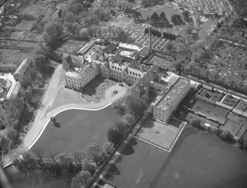

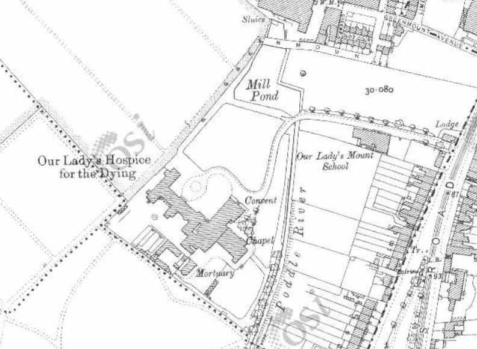

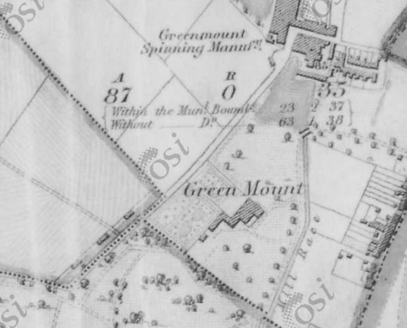

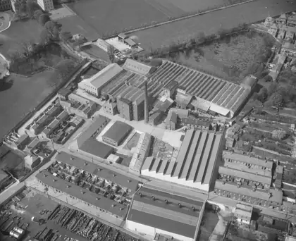

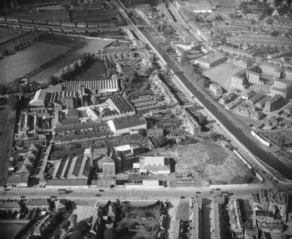

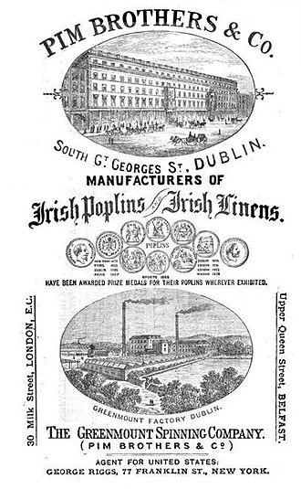

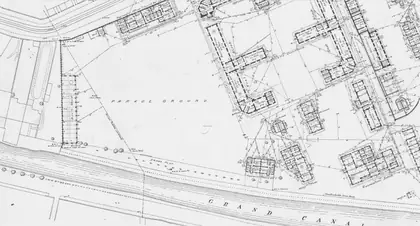

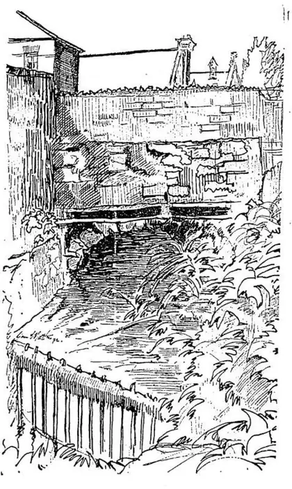

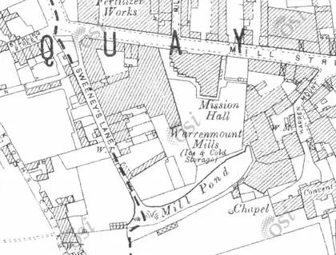

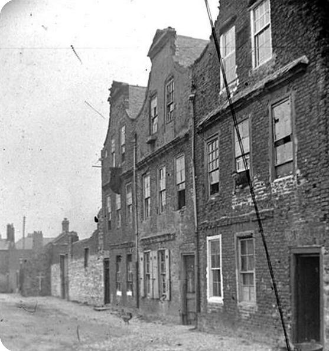

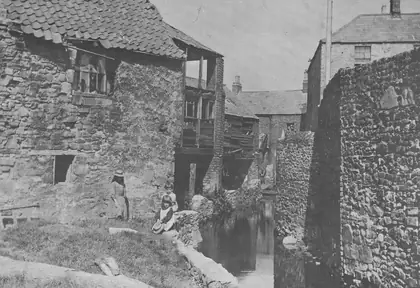

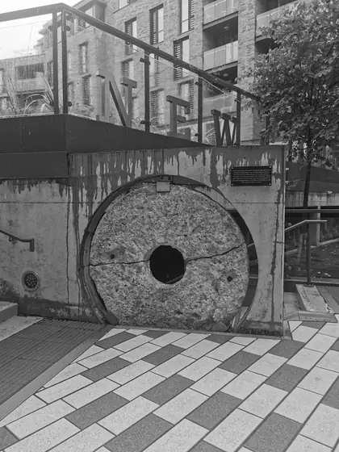

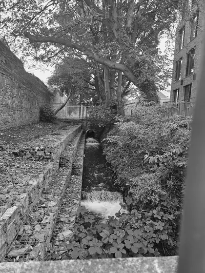
Pictures gathered by the Crumlin and Walkinstown History Group for their Poddle research, shown here in black and white. If you know more about any of them, or hold the rights to one, please get in touch.
Poddle People
- Sister Ann Dominica Fitzgerald: The first Poddleologist
- Mary Aikenhead: Founded the Hospice on the river
- The Pims: Quaker mill owners at Greenmount
Parts of this page draw on research by the volunteers of the Crumlin and Walkinstown History Group, shared with poddle.ie. About their research.